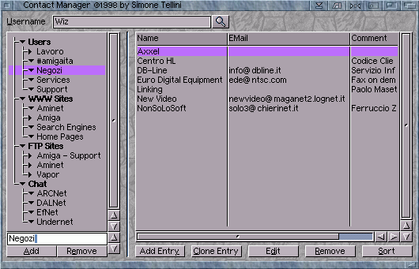

Voyager 3.5.2 by Chris Wiles, 1999.
3.71 Understanding the Bookmarks
3.5.2 note: Contact Manager (CManager.mcc) is compiled out of this 68k build (USE_CMANAGER is 0). The ADD / BM gadgets and this chapter describe the V3 CManager bookmarks. Use Fastlinks for one-click sites; factory Fastlink Docs opens this manual. A full CManager install from a VaporWare archive is not required for 3.5.2.
Voyager 3 used an external bookmark system based on a cut-down version of 'Contact Manager'. Contact Manager is a kind of diary or system address book which allows you to store all your favourite user informaiton, web sites, ftp sites and IRC server/channels. It is designed as a replacement to all the different bookmarks, addressbooks and similar GUI's that are built into the many different Amiga Internet and comms programs.

The supplied Voyager cut-down version of 'Contact Manager' offers a number of features over most of the internal bookmark/addressbooks:
Some of these programs will use the Contact Manager in additional ways. For instance Microdot will call the Contact Manager when you press to: or cc: when writing a new message.
Note that there are futher options within the full, registered version of 'Contact Manager'. Most notably there is support for Genesis' multi-user system and a number of settings.